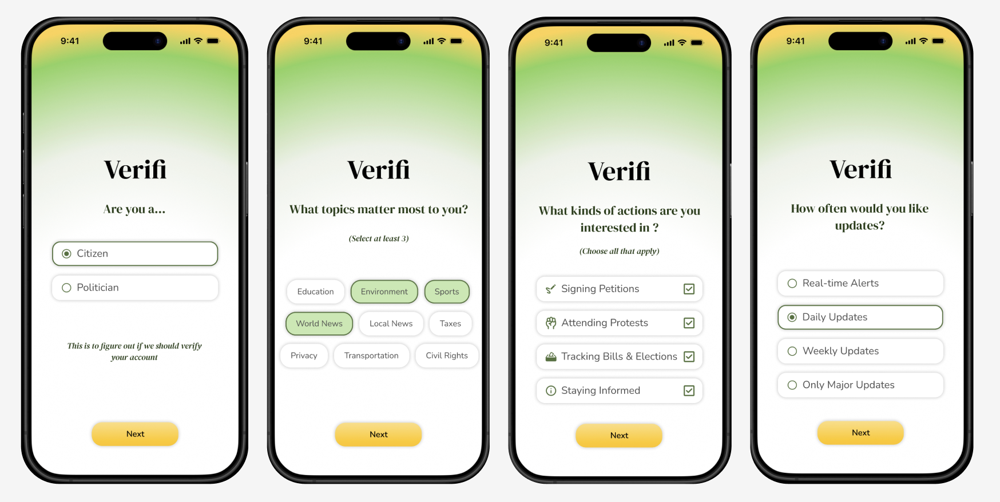
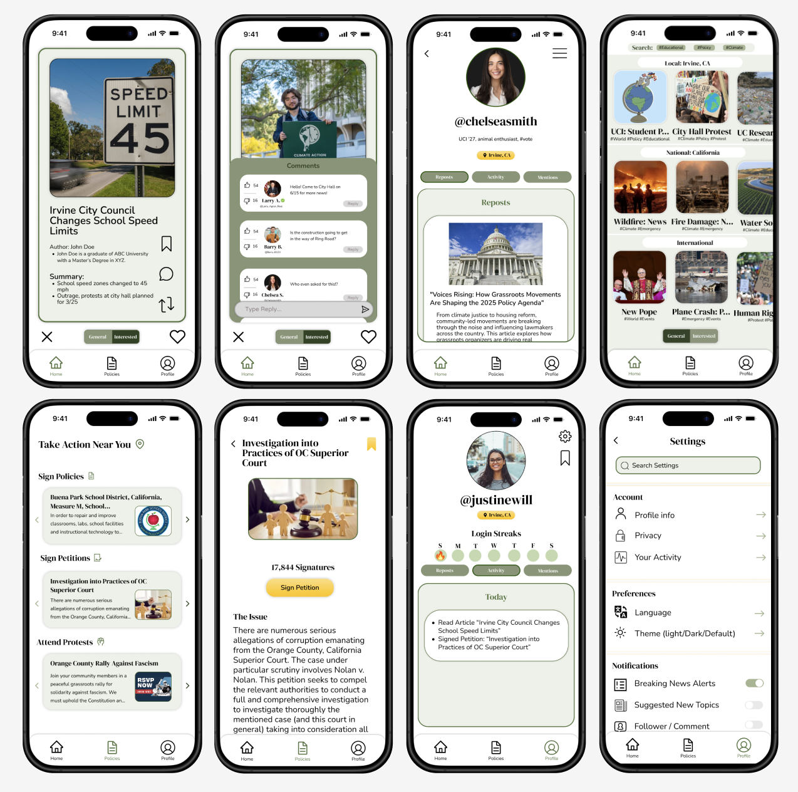

Overview
Helping People Trust What They Read
Verifi is a mobile news and politics app designed to help users quickly understand how credible a piece of content is. I focused on the UX and UI design, creating a clean and accessible interface so users can scroll, read, and share news with more confidence.

Problem
Information Overload and Unclear Credibility
People constantly see political content across social media and news feeds, but it is difficult to know what is accurate, biased, or misleading. Existing tools often feel cluttered, overly technical, or unapproachable, which discourages everyday users from verifying information before sharing it.
Goals
- Make credibility information quick to understand at a glance.
- Keep the interface simple, minimal, and approachable.
- Improve accessibility with clear labels and contrast-aware visual cues.
Research Insights
- Users wanted a single, clear credibility indicator instead of long reports.
- Overly colorful or biased visual language reduced trust in the tool.
- Many users were unsure which sources to trust without extra context.
- Dense layouts and small text made verification tools feel overwhelming.
Solution
A Simple, Trust-Centered Interface
I designed Verifi around a small set of core components that surface credibility in a calm, structured way. The experience focuses on clarity over decoration so users can quickly see how reliable an article is and why.
Key Features
- Credibility Score Card: A prominent card showing the rating (Reliable, Mixed, Low) using accessible color, clear typography, and a short explanation.
- Source Breakdown: A simple panel that explains the reasoning behind the rating with factors like source history and bias, without overwhelming users.
- Clean Article Preview: A stripped-down article card that prioritizes headline, outlet, date, and credibility over distractions.
- Quick Verify Input: A dedicated space for users to paste a link or search a topic to check credibility quickly.
Final Designs
The final UI uses a soft, neutral palette, strong typographic hierarchy, and consistent card components. This keeps the experience focused on clarity and trust rather than sensational visuals.

Reflection
Designing Verifi taught me how important it is to simplify complex information into digestible UI. I learned to be intentional with color and iconography when designing for trust, to avoid signaling bias or alarm unnecessarily. In future iterations, I would like to run usability tests with different levels of news literacy to refine how credibility is explained and explore ways to better support users who want to dive deeper into the reasoning behind each rating.